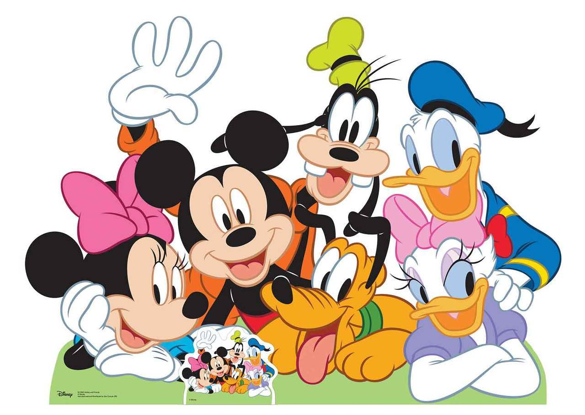

About Donald Duck
Donald Duck is a hot-tempered duck in a sailors outfit.
Donald Duck and his friends
Donald´s characteristics
- He's got a big temper.
- He tho loves his family.
- He has a secret identity.
- His uncle is a real Scrooge.
Donald Duck's Friends and Family
Donald Duck has a bunch of friends but also family. And some frenemies too. Haha. Click on the links below to read more about them.
- Daisy Duck (On and off girlfriend.)
- Gladstone Gander (Cousin & frenemy and often rival for Daisy Duck's affections.)
- Huey, Dewey and Louie (Donald's nephews who live with him.)
- Mickey Mouse